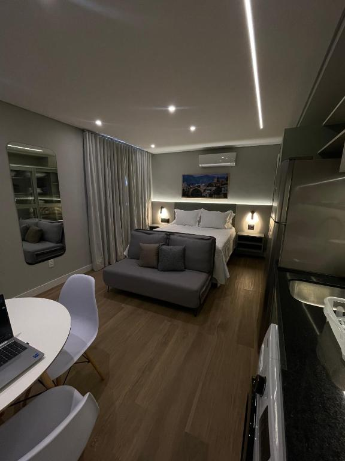
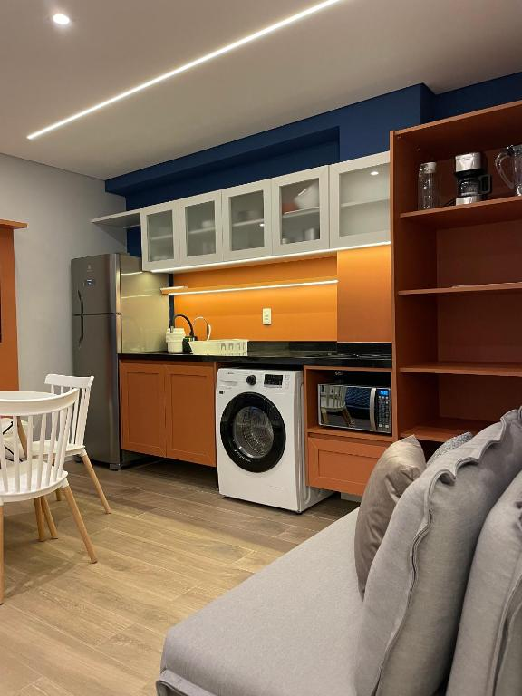
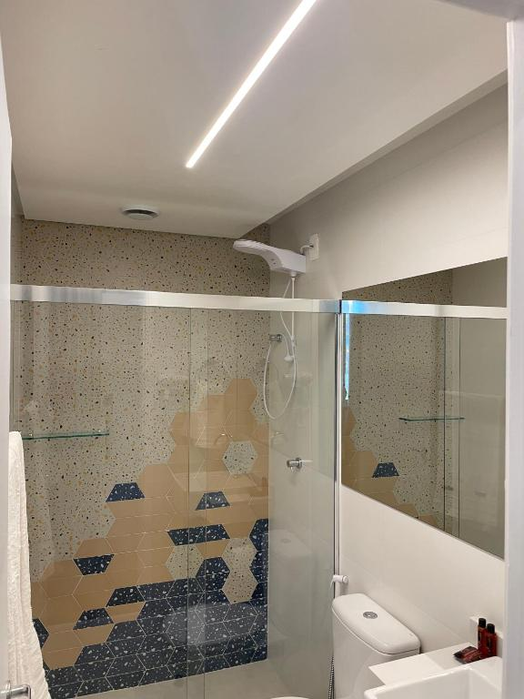
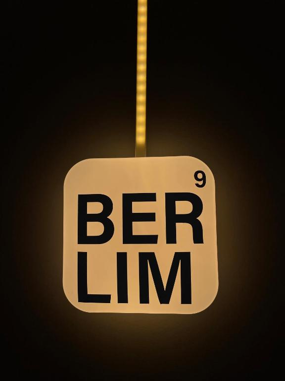

Traje, o que levar e como se preparar tecnicamente para cada visita — consultoria, mercado financeiro e IA. Leia antes de domingo. Chegamos elegantes, saímos com repertório.
12
Empresas
05
Dias
11
Membros
01
Missão
Liga de Empreendedorismo da Praia VermelhaEngenharia. Tecnologia. Negócios.
Apresentação pessoal/01
Traje e postura
Representamos a liga em 12 empresas — de startups a uma das maiores consultorias do mundo. O padrão é único para a semana inteira: traje social, sempre. Elegância e autoridade abrem portas antes da primeira pergunta.
01Traje social todos os dias. Camisa social; calça de alfaiataria ou social; sapato social ou equivalente arrumado. Blazer soma autoridade — leve ao menos um. Nada de tênis esportivo, camiseta, bermuda ou jeans surrado, mesmo em startup: quem se veste acima do ambiente conduz a conversa.
02Vista-se em camadas. Manhãs frias (14–18°C) e tardes que passam de 25°C nesta semana — o blazer ou um casaco sóbrio resolve a manhã, mantém o padrão do grupo e sai fácil à tarde. Previsão completa dia a dia na próxima página.
03Postura de visita. Pontualidade absoluta (saídas do hotel no horário do app), celular no silencioso, perguntas específicas em vez de genéricas — 2 ou 3 preparadas por empresa rendem mais que dez improvisadas.
O que levar todos os dias
01Bolsa ou mochila pequena e discreta. Vamos receber brindes nas visitas — sem bolsa, você vira malabarista de canecas. Também carrega caderno e carregador.
02Documento de identificação com foto. Obrigatório: as portarias corporativas (Bain, Revolut, torres da Faria Lima) exigem documento físico para liberar o acesso. RG ou CNH, todos os dias, sem exceção.
03Caderno e caneta. Anotar à mão durante a conversa lê como interesse; digitar no celular lê como distração. Os aprendizados vão depois para a aba da empresa no app.
04Celular carregado + carregador ou power bank. Agenda, trajetos, mapas e selos passam pelo app. Bateria é infraestrutura da missão.
05Garrafa de água e guarda-chuva compacto. Dias longos, tempo instável de inverno.
Regra de ouro: se estiver em dúvida se algo é formal o suficiente, não é. O grupo inteiro no mesmo padrão constrói a imagem da liga — um destoando desconstrói.
Guia do membro — Missão SP02
A base e a cidade/02
Iguatemi Stay BT
Nossa base da semana: studios modernos e completos na R. Butantã, 324 — Pinheiros, a 600 m da estação Faria Lima. Prédio residencial, sem lobby de hotel: cada unidade tem nome de cidade na porta (Berlim, Sarajevo, Amsterdam...). A alocação de quartos está no widget "Quartos" do app.

Studio completo

Cozinha equipada

Banheiro

Unidades por cidade
Fotos reais das unidades — galeria oficial do anúncio no Booking.com.
Avisos sobre São Paulo
01Frio de manhã, calor à tarde. Inverno paulistano é amplitude térmica: saídas do hotel com 14–18°C e tardes que passam de 25°C até quinta. Camadas resolvem — casaco cedo, sem ele à tarde.
02Frente fria chega quinta. Pancadas de chuva na quinta e na sexta — e a sexta esfria de verdade (máxima de 18°C). Guarda-chuva na bolsa a partir de quinta e casaco no dia da ENTER e da Tivita.
03Trânsito conta como distância. Em SP, 5 km podem levar 40 minutos no horário de pico — os horários de saída do app já embutem isso. Atraso individual vira atraso do grupo na portaria.
Previsão dia a dia
Dia
Céu
Temperatura
Chance de chuva
Dom 19Chegada
Céu limpo
14° / 26°C
0%
Seg 20NOMAD
Quase limpo
17° / 27°C
0%
Ter 21Mottu → Mirow
Nublado
16° / 28°C
0%
Qua 22Sharpi+Segura · Bain
Nublado
18° / 29°C
8%
Qui 23PAX · Revolut
Pancadas de chuva
18° / 26°C
33%
Sex 24ENTER · Tivita
Pancadas de chuva
15° / 18°C
48%
Previsão Open-Meteo para Pinheiros, consultada em 18/07 à tarde — confira no dia pelo app de sempre.
Guia do membro — Missão SP03
Preparação técnica/03
Como se preparar para os cases
Três lentes cobrem as 12 visitas. Domine o vocabulário de cada uma para acompanhar a conversa e fazer perguntas no nível de quem recebe a gente.
Case de consultoria — Mirow & Co. (ter) e Bain & Company (qua)
Estruturar antes de responder
01Entenda o problema. Reformule com suas palavras e confirme o objetivo antes de resolver ("o cliente quer crescer receita ou margem?").
02Estruture MECE. Quebre o problema em partes mutuamente exclusivas e coletivamente exaustivas — sem sobreposição, sem buraco.
03Levante hipóteses. Consultoria trabalha hypothesis-driven: chute educado primeiro, dado depois para confirmar ou matar.
04Faça as contas. Market sizing top-down (mercado total → fatia) ou bottom-up (unidade → escala). Arredonde sem medo, explicite as premissas.
05Sintetize. Recomendação primeiro, argumentos depois (pirâmide de Minto) — nunca o contrário.
MECE
Mutually Exclusive, Collectively Exhaustive — o padrão de qualidade de qualquer estrutura de análise.
Market sizing
Estimar o tamanho de um mercado (TAM/SAM/SOM) com premissas explícitas.
Due diligence
Investigação de uma empresa antes de investimento ou aquisição — grande linha de projetos da Bain com private equity.
5 Forças de Porter
Rivalidade, novos entrantes, substitutos, poder de fornecedores e de clientes — mede atratividade de um setor.
Benchmark
Comparação com referência de mercado ("qual o padrão do setor?").
Boutique vs. Big 3
Mirow = nicho e profundidade; Bain/McKinsey/BCG = escala global e múltiplas indústrias. Mesma profissão, modelos diferentes.
Oportunidade rara: a visita à Mirow é conduzida por um ex-membro da LEPV. Pergunte sem filtro como a liga se conecta (ou não) com o dia a dia de consultoria.
Guia do membro — Missão SP04
Case de mercado financeiro — NOMAD (seg) e Revolut (qui)
Onde a fintech ganha dinheiro
A pergunta-mestra das duas visitas: qual é a fonte de receita de cada produto? Conta em dólar vive de spread; superapp vive de interchange, assinatura e float. Quem entende a receita entende as decisões.
Spread cambial
Diferença entre a cotação de compra e a repassada ao cliente — principal receita de contas em dólar como a NOMAD.
IOF
Imposto sobre operações financeiras; muda a competitividade entre cartão, remessa e conta internacional.
Interchange
Tarifa que o emissor do cartão recebe por transação — receita central de neobanks.
Float
Rendimento do dinheiro parado na conta enquanto não é gasto.
CDI / Selic
Taxas de referência do Brasil; "render 100% do CDI" é o benchmark de qualquer conta remunerada.
Licenças do BC
Instituição de Pagamento (IP), SCD, banco múltiplo — cada licença define o que a fintech pode ou não oferecer.
KYC / AML
Know Your Customer / Anti-Money Laundering — o custo regulatório de operar em dezenas de países, tema central para a Revolut.
CAC / LTV
Custo de adquirir um cliente vs. valor que ele gera na vida útil; a razão LTV/CAC resume a saúde do crescimento.
Superapp financeiro
Estratégia de concentrar câmbio, banking, investimento e cripto num app só — o modelo Revolut, vs. o foco da NOMAD.
Take rate
Percentual que a plataforma captura de cada transação que intermedia.
Guia do membro — Missão SP05
Case de IA — Sharpi + Segura (qua), PAX (qui), ENTER e Tivita (sex)
IA vertical: máquina onde dá, humano onde importa
As cinco empresas vendem o mesmo padrão para compradores diferentes: IA especializada num setor (vertical), com revisão humana nos pontos críticos. A pergunta-mestra: onde a máquina para e o humano entra — e por quê?
LLM
Large Language Model — modelo de linguagem que alimenta os produtos (GPT, Claude, Gemini).
Agente de IA
Sistema que executa tarefas em passos (consulta sistemas, decide, age) em vez de só responder — ex.: Júlia e Taís, da Tivita.
IA vertical
Modelo/produto especializado num setor (jurídico, saúde, seguros) — mais precisão e defensibilidade que software genérico.
Human-in-the-loop
Revisão humana obrigatória em decisões sensíveis — como a ENTER usa advogados sobre o output da IA.
RAG
Retrieval-Augmented Generation — a IA consulta uma base (processos, apólices, B.O.s) antes de responder, reduzindo invenção.
Alucinação / guardrails
Resposta inventada com confiança / barreiras que limitam o que o sistema pode fazer. Em domínio regulado, é o tema nº 1.
Contencioso de massa
Milhões de processos repetitivos (consumidor, trabalhista) de bancos, varejo e aéreas — o volume que a ENTER automatiza.
Govtech
Vender tecnologia para o setor público: licitações, ciclos longos, relação com gestores — o mundo da PAX.
Glosa
Recusa de pagamento de convênio por erro de faturamento — dor central das clínicas que a Tivita ataca.
ARR / NRR
Receita recorrente anual / retenção líquida de receita — as métricas que definem se um SaaS de IA é saudável.
Guia do membro — Missão SP06
Contexto por visita/04
Situando cada visita
O essencial para não chegar cru: o que cada empresa é, o contexto de agora e a lente de case que se aplica.
Segunda20/07
10:00–17:00
NOMADMercado financeiro
Fintech brasileira de conta, cartão e investimentos em dólar nos EUA. Contexto: compete com bancos tradicionais e fintechs de câmbio; receita ancorada em spread cambial. Estude remessas internacionais e a regulação do BC para instituições de pagamento.
19:30
Happy Hour — Alumni IMENetworking
Pirajá Faria Lima. Networking com engenheiros que já estão no mercado — leve as perguntas de carreira que não couberam nas visitas.
Terça21/07
09:00–11:30
MottuOperações
Scale-up de aluguel de motos por assinatura para entregadores de app. Contexto: unit economics de ativo físico em escala — CAC, LTV, depreciação e manutenção de frota. Compare "vehicle-as-a-service" com financiamento tradicional.
12:30–13:30
InsperEducação
Escola de negócios de referência, forte ponte com o mercado financeiro. Contexto: o que uma instituição dessas espera de parcerias com ligas — pergunta direta a fazer.
14:00–15:00
LinkEducação
Faculdade-aceleradora: acelerador próprio (Link Vector) e fundo (Link Capital) que investem em startups dos alunos. Contexto: mede sucesso pelo "Link ROI" — retorno dos empreendedores formados. Contraste com o modelo do Insper visto 1h antes.
16:30–18:30
Mirow & Co.Consultoria
Consultoria boutique de estratégia — visita conduzida por ex-membro da LEPV. Contexto: nicho e profundidade vs. escala das grandes. Revise Porter, cadeia de valor e SWOT; aproveite a mentoria direta.
Guia do membro — Missão SP07
Quarta22/07
09:00–14:00
Sharpi + SeguraIA
Duas early-stage recebendo juntas. Sharpi: IA para vendas B2B — pedidos de indústrias/distribuidores automatizados via WhatsApp (texto, áudio, foto). Segura: insurtech B2B para corretores — IA em cotação, apólice e renovação. Mesma tese: automação vendida a comprador tradicional; o desafio é adoção.
16:00–19:00
Bain & CompanyConsultoria
Uma das três maiores consultorias do mundo. Contexto: estratégia corporativa, due diligence de private equity, transformação. Revise a estrutura de case (hipótese, estimativa, MECE) e compare mentalmente com a Mirow do dia anterior.
Quinta23/07
09:30–11:30
PAXIA · Govtech
IA para segurança pública: cruza câmeras, boletins de ocorrência e bases criminais. Contexto: maior seed da história do Brasil — US$ 40 mi (Greenoaks e Benchmark, mai/2026). Vale perguntar sobre os limites de privacidade e vigilância — debate real do setor.
16:00–20:00
RevolutMercado financeiro
Superapp financeiro global (câmbio → banking completo) operando em dezenas de países. Contexto: desafio regulatório multi-país (KYC/AML por jurisdição); compare com Nubank, N26 e Wise. Happy hour na sequência, mesmo local.
Sexta24/07
09:00–12:00
ENTERIA · Legaltech
Automação de contencioso de massa com IA + revisão de advogados. Contexto: primeiro unicórnio de IA da América Latina — US$ 1,2 bi (Founders Fund, mai/2026) com ~3 anos de vida. Pergunta óbvia e boa: o que destravou esse crescimento?
14:00–16:00
TivitaIA · Healthtech
Gestão de clínicas com agentes de IA (Júlia e Taís): agendamento, faturamento, glosa de convênios. Contexto: R$ 32 mi captados (FinTech Collective). Compare com a Sharpi de quarta — mesma tese de IA vertical, comprador diferente.
Fecho da semana: o valor não está em nenhuma visita isolada, e sim na comparação — como a Bain estrutura um problema vs. a Mirow; como a Revolut trata risco vs. a NOMAD; como Sharpi, Segura, ENTER e Tivita vendem a mesma tese de IA para mundos diferentes. Registre os aprendizados na aba de cada empresa no app e garanta seu selo.